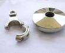

产品详情与技术参数


BE-88A
．各项参数
标准硫酸镍镀液
基本组合
硫酸镍
200-260g/L
氯化镍
45-50g/L
硼酸
40-45g/L
BE-88A
挂镍光亮剂
0.2-0.4cc/L
BE-88B
挂镍柔软剂
6-10cc/L
BE-100挂镍湿润剂
2-4cc/L
BE-88C
挂镍走位剂 1-2CC/L
P
H
值
4-4.8
温
度
50-60
℃
电流密度
2.8-10.8
A/dm²
搅
拌
空气搅拌或阴极移动
过
滤
连续
2
．镀液的维护
a
．各项操控参数应控制在工艺范围内；
b
．各项操控参数，控制在正常情形下
BE-88A
挂光亮剂，消耗量为
100-150cc/1000
安培小时；
BE-88B
挂柔软剂，消耗量为
100-200cc/1000
安培小时；
BE-100挂湿润剂，消耗量为30-50
cc/1000
安培小时；
BE-88C
挂走位剂，消耗量为5
0-
8
0cc/1000
安培小时
3
．添加剂作用
BE-88A
挂镍光亮剂：光亮剂不足时，光亮度差，高低电流区填平差；光亮剂过量时，低位发黑，需加
BE-88B
、BE-88C平衡之。
BE-88B
挂镍柔软剂：柔软剂不足时，白亮度差，内应力大而脆，过量镀层易
变色、不亮。
BE-100挂镍湿润剂：防止产生针孔。
BE-88C
挂镍走位剂：走位不足时，深孔走位稍差。
prev
next
LY-N14三价黑铬工艺
LY-998 高耐蚀白铬
OPASS UX酸铜光亮剂
Black Pearl仿古黑
CT-RN光亮氰化铜电

a.各项操控参数应控制在工艺范围内；
b.各项操控参数，控制在正常情形下
DET-SA光亮剂，消耗量为200-250cc／1000安培小时；
DET-SB柔软剂，消耗量为100-150cc／1000安培小时
若需强走位，则需加入深镀剂。
prev
next
LY-N14三价黑铬工艺
LY-998 高耐蚀白铬
OPASS UX酸铜光亮剂
Black Pearl仿古黑
CT-RN光亮氰化铜电